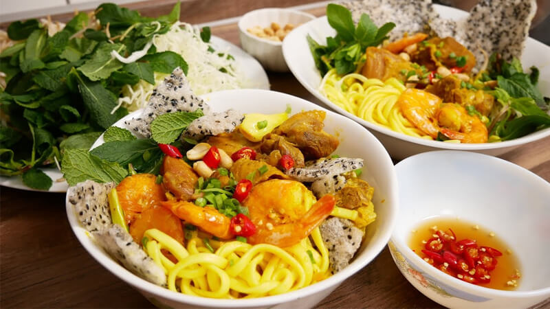

Mi Quang - Quang Noodle

Description
Mi Quang - Quang noodle is a famous delicacy of the idyllic Quang Nam land in Vietnam. Quang noodles have long been loved by many food connoisseurs because of their delicious and rich flavor.
The perfect combination of golden noodles with soft fragrant chicken, fatty peanuts and herbs mixed in a rich, rich sauce is ready to conquer the taste of any fastidious diners. The characteristic of Quang noodles is that it must be used with crispy baked rice cakes to have a full taste. The dish is rustic but bold with the sophistication of Central cuisine and has become a specialty of this idyllic land.
Ingredients
- Quang special noodles: 500 grams
- Sesame rice cake: 5 pieces
- Compressed tubers: 50 grams
- Mustard greens: 100 grams
- Chicken: 1.2 kg
- Banana cabbage: 200 grams
- Quail eggs: 30 eggs
- Basil and basil: 100 grams
Steps
-
Process materials
- Crushed tubers, then chopped
- Onion, peeled and thinly sliced
- Ginger, peeled and finely chopped
- Crushed chili
- Purchased chickens are washed, salted and washed several times under clean running water. Then remove the chicken bones and set aside. Freshly sliced chicken. Marinate chicken with compressed tubers, ginger, red onion, chili, fish sauce, cashew oil, salt, pepper and monosodium glutamate, mix well and let infuse for 30 minutes
- Herbs are carefully picked, washed, then taken out and placed on a separate plate
- Boiled quail eggs peeled
-
Cooking steps
- Heat a pan with a little cooking oil, add chopped compressed tubers and fry until fragrant. Continue to add the marinated chicken to the pan, stirring until the chicken is tender. Add the broth to the pan to cover the chicken, cook over medium heat until the water dries up.
- Sliced bananas and put them in a bowl of ice water with a few slices of lemon to prevent them from browning and keeping their crunchiness. Gently shake to loosen the banana. Then take out the banana and put it on a plate with the herbs.
- Place Quang noodles in a bowl. In turn, arrange the other ingredients in a beautiful bowl, including: coriander and basil, boiled quail eggs, bananas. Then scoop the fried chicken on top. Drizzle the stir-fry sauce last.
- Sprinkle roasted peanuts on the surface of the bowl of Quang noodles to increase the attractiveness. The rice cake is broken into small pieces and decorated in a bowl of noodles.
References
- Ingredients and Steps from here.
- Translated using Google Translate.
Links